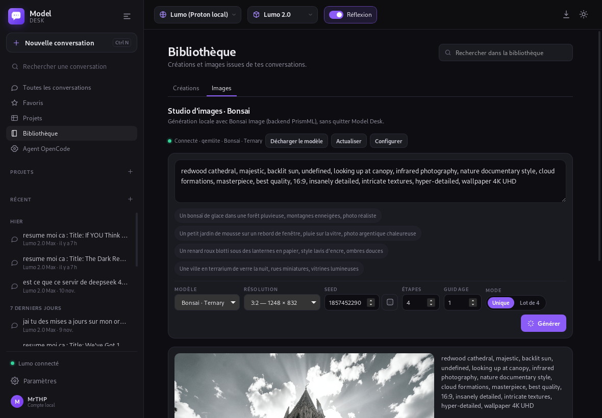
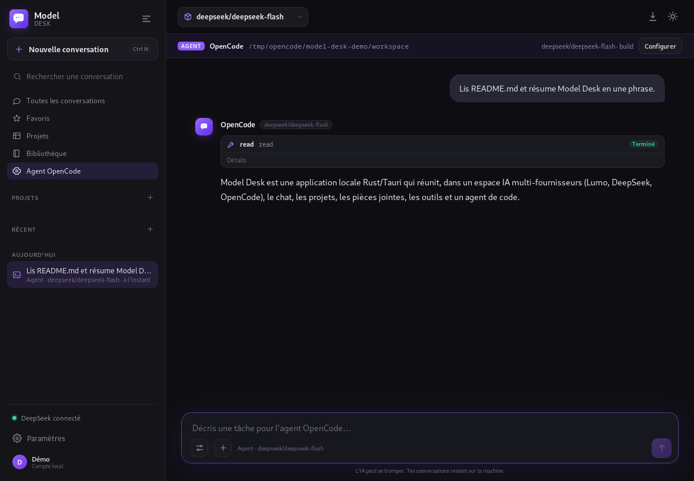
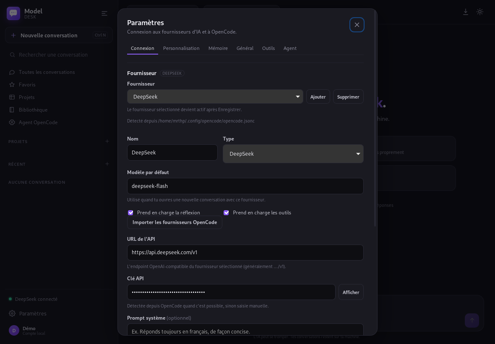
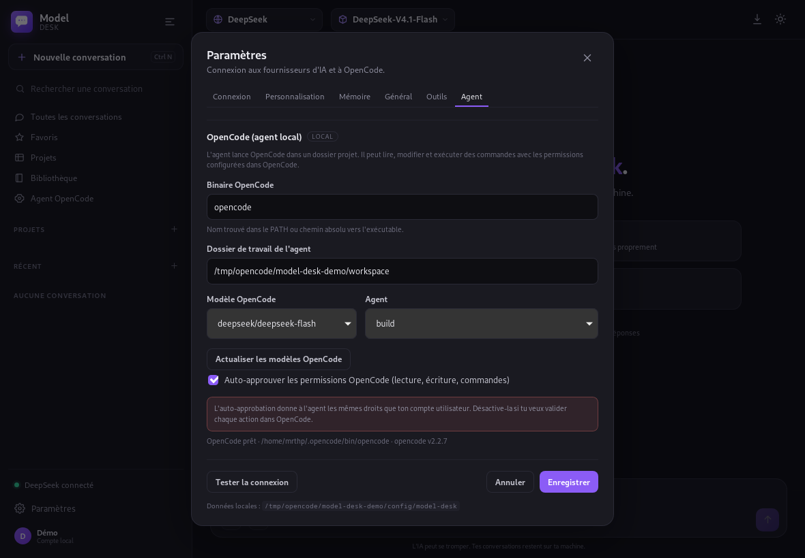

Multi-provider
Lumo through lumo-tamer, DeepSeek, or any OpenAI-compatible endpoint. Switch providers in one click and keep one history.
A local-first AI workspace for Lumo, DeepSeek and any OpenAI-compatible provider — with an OpenCode coding agent, projects, attachments, memory and tools.

Switch providers, keep your history local, and hand coding tasks to OpenCode without leaving your desk.
Lumo through lumo-tamer, DeepSeek, or any OpenAI-compatible endpoint. Switch providers in one click and keep one history.
Run OpenCode inside a project folder, stream tool calls, choose the model and agent, and approve actions yourself or automatically.
Token-by-token replies, provider-aware reasoning, Markdown and highlighted code. Stop a generation at any time.
Generate images locally with Bonsai Image: prompt, model variant, resolution, seed, steps, guidance, batch of 4, stop and a persistent gallery. Start the backend automatically from the Images tab, unload the GPU model manually or on quit. Connects to your own PrismML backend.
Conversations, projects, favorites and search live in local JSON files. Switch providers without losing your history.
Drop text, code, PDF, DOCX/ODT or images. Text is extracted locally and images are OCR'd before being sent to the selected provider.
Read, write, search and shell tools with a workspace sandbox and confirmation prompts. You stay in control.
Tell the assistant who you are, what you do and how to behave. Durable memories can be extracted automatically and stay local.
HTML and SVG creations open in a sandboxed canvas. The library keeps your best artifacts and images one click away.
Close to tray, reopen instantly, start a new chat or quit. The app stays out of your way until you need it.
The interface follows your system locale, with a manual override in Settings. Dates and labels follow the active language.
Enable lumo-tamer's native web search with one switch. Ask for current weather, news or facts and get live answers.
Actual screenshots from the app: providers, chat, the Bonsai image studio and the OpenCode agent.




Model Desk talks to Lumo through your local lumo-tamer, to DeepSeek directly, and to OpenCode for coding tasks. There is no Model Desk cloud.
Model Desk is a local client, not a hosted service.
Conversations, projects, memories and settings live in ~/.config/model-desk. No cloud account for the client.
PDF text, Office documents and image OCR are extracted on your machine. Only the resulting text is sent to the provider you selected.
No analytics, no tracking, no account required to run the desktop app. The source code is open.
AppImage or .deb, Linux x86_64. Version 0.4.1 adds automatic Bonsai backend start, Lumo Tamer, DeepSeek and the OpenCode agent.
# Make the AppImage executable, then run it
chmod +x Model-Desk_0.4.1_amd64.AppImage
./Model-Desk_0.4.1_amd64.AppImageThe AppImage uses the system WebKitGTK 4.1. For Lumo, run lumo-tamer. For the agent, install OpenCode. For PDF/OCR attachments, install poppler-utils, tesseract and unzip.
No. Model Desk is independent and not affiliated with Proton. Lumo is a trademark of Proton AG. Lumo support goes through lumo-tamer's unofficial API.
In ~/.config/model-desk. Conversations, projects, memories and settings stay local.
Only if you want Lumo through lumo-tamer. The installer uses Docker, Compose and git. DeepSeek and OpenCode do not require Docker.
Yes. Set the lumo-tamer directory and API key in Settings → Connection. The app auto-detects the provider from OpenCode when available.
Not the raw images. The client extracts text with local OCR and sends that text. Native attachments depend on the provider.
MIT. The code is open source and contributions are welcome.
Lumo through lumo-tamer, DeepSeek, and any OpenAI-compatible endpoint. OpenCode can run as a coding agent with its own model selection.
Yes. Use DeepSeek or a custom endpoint for chat, and OpenCode for coding tasks. Lumo is optional.
Download the AppImage, pick Lumo, DeepSeek or your own endpoint, then chat or start an OpenCode agent task.